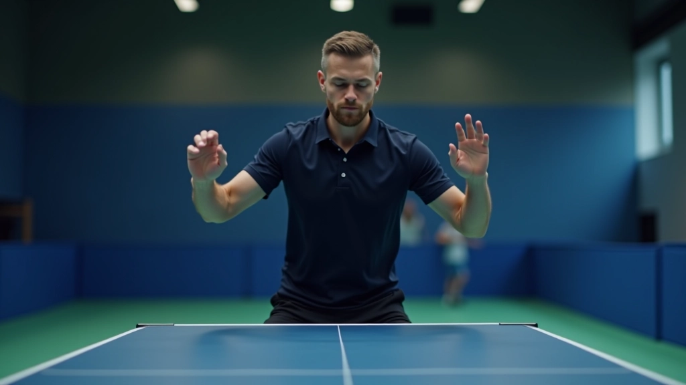
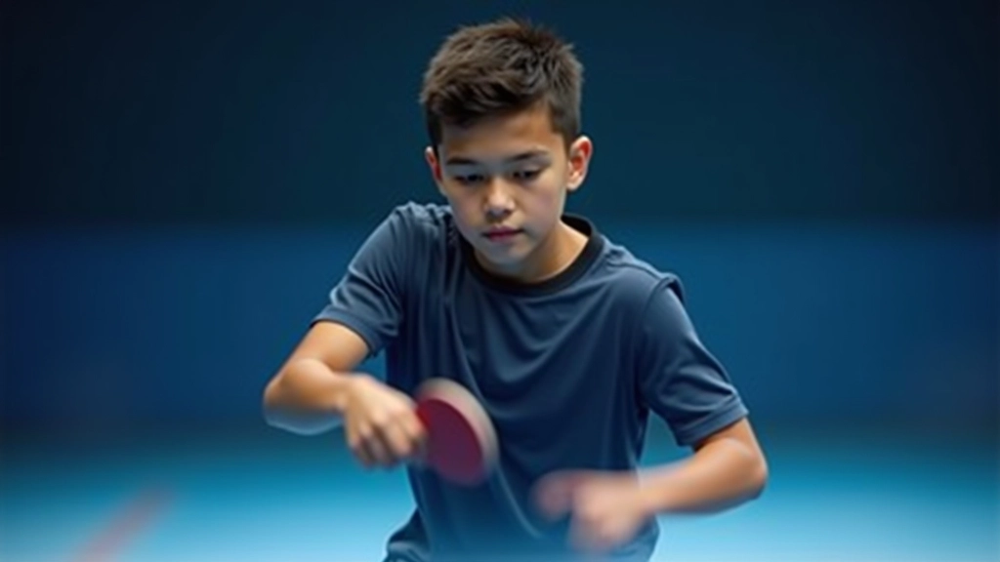
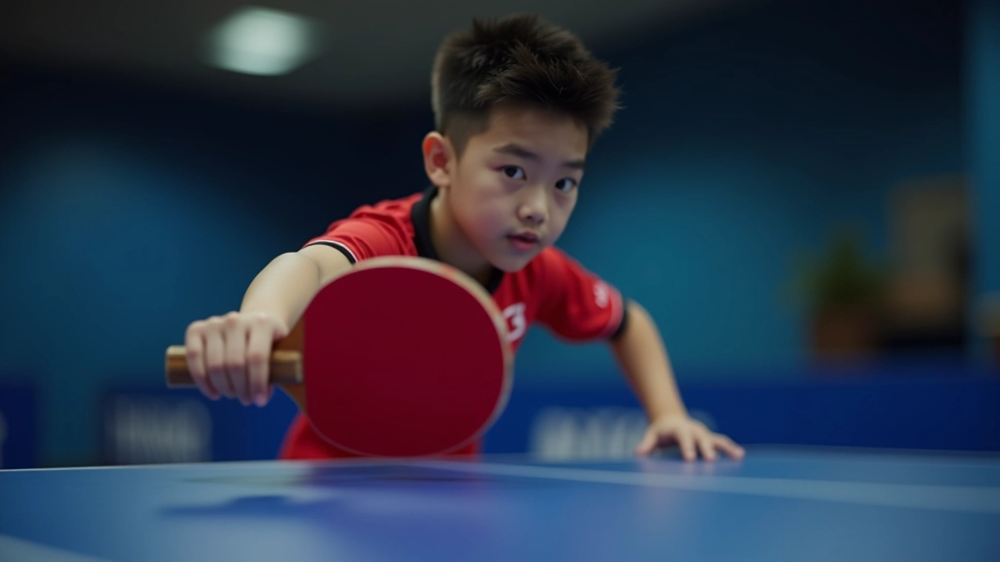

الحركة السريعة هي قلب لعبة تنس الطاولة. ليس كافياً أن تملك ضربة قوية — يجب أن تكون في المكان الصحيح في الوقت المناسب. الكثير من الناشئين يركزون على قوة الضربة وينسون أن الموقع على الطاولة هو ما يحدد نوعية الضربة نفسها.
في هذا الدليل، سنشرح كيف تطور سرعة قدميك وتحسن توازنك على الطاولة. هذه المهارات لا تتعلق بالركض السريع فقط — بل بالخطوات الصحيحة والتحكم في الجسم. يمكنك تطبيق هذه التمارين مباشرة في تدريباتك.
ماذا ستتعلم
- خطوات القدم الأساسية والخطوة الجانبية
- تمارين سرعة التحرك على الطاولة
- تحسين التوازن والتحكم
- برنامج تدريبي بسيط يمكنك البدء به فوراً
الخطوات الأساسية في تنس الطاولة
قبل أن تبدأ بالتمارين السريعة، عليك فهم كيفية تحريك قدميك بشكل صحيح. الخطوة الصحيحة توفر توازناً أفضل وتسمح لك بالعودة إلى موقعك الأساسي بسرعة.
الموقف الأساسي يبدأ بقدميك على عرض الكتفين، وزنك على كرات القدمين وليس على الكعبين. من هنا، تستطيع التحرك في أي اتجاه بسرعة. تذكر أن الحركة الجيدة ليست عن الخطوات الطويلة — بل عن الخطوات الصغيرة السريعة والمتحكمة.
نصيحة مهمة: الخطوة الجانبية (Side Step) هي الأساس. بدلاً من الركض، تحرك جانباً بخطوات صغيرة متقاربة. هذا يبقيك متوازناً وجاهزاً للضربة.


تمارين سرعة القدمين التي تعمل فعلاً
هناك عدة تمارين مجربة تحسن سرعة حركتك على الطاولة. الأفضل أن تمارسها بانتظام — حتى ١٥ دقيقة في كل تدريب كافية للبدء.
١. تمرين الحركة الجانبية السريعة
قف في وسط الطاولة، ثم تحرك جانباً بخطوات صغيرة سريعة لمسافة متر تقريباً، ثم عد إلى المنتصف. كرر هذا ١٠ مرات على كل جانب. المهم أن تحافظ على توازنك وأن لا تتوقف عن الحركة.
٢. تمرين الزوايا الأربع
ضع أربع نقاط تخيلية حول الطاولة (أمام، خلف، يمين، يسار). ابدأ من المنتصف والتحرك بسرعة إلى كل نقطة ثم العودة. افعل هذا ٨ مرات. هذا التمرين يحسن سرعة تغيير الاتجاه.
التوازن والثبات أثناء الحركة
السرعة وحدها لا تكفي. عليك أن تكون ثابتاً عند ضربة الكرة. لاعب سريع لكنه غير متوازن سيضيع فرصاً كثيرة. التوازن يأتي من التحكم الجيد في الجسم والقدمين معاً.
عند الاقتراب من الكرة، توقف عن الحركة قبل الضربة بلحظة. قدماك يجب أن تكونا ثابتتين والوزن موزع بالتساوي. هذا يعطيك الثبات الذي تحتاجه لضربة دقيقة وقوية.
"الحركة الجيدة ليست فقط عن السرعة. إنها عن أن تكون في المكان الصحيح بتوازن كامل، جاهزاً للضربة التالية."
— خبرة التدريب في تنس الطاولة

برنامج تدريب سريع للبدء
إذا كنت جديداً على هذا النوع من التمارين، ابدأ بهذا البرنامج البسيط. مدته ٢٠ دقيقة، ويمكنك القيام به ٣ مرات في الأسبوع.
الإحماء (٥ دقائق)
حرك ذراعيك وساقيك، واركض في المكان ببطء. استعد جسمك للتمارين.
الحركة الجانبية (٦ دقائق)
قم بتمرين الحركة الجانبية السريعة. ١٠ مرات على كل جانب، مع فاصل ٣٠ ثانية.
تمرين الزوايا (٦ دقائق)
قم بتمرين الزوايا الأربع. ٨ مرات متتالية مع محاولة الذهاب أسرع كل مرة.
التهدئة (٣ دقائق)
امش ببطء واسترخِ. تنفس بعمق وقيّم ما فعلت للتو.
الخطوة التالية
تحسين الحركة والسرعة يحتاج إلى وقت والتزام. لا تتوقع نتائج فورية — معظم اللاعبين يشعرون بفارق واضح بعد ٤ إلى ٦ أسابيع من التدريب المنتظم. المهم أن تبدأ الآن وتبقى منتظماً.
ركز على الجودة وليس الكمية. تمرين واحد جيد أفضل من عشرة تمارين سيئة. وتذكر أن تطلب من مدربك أن يراقب حركتك ويعطيك تعليقات. التغذية الراجعة ضرورية للتحسن السريع.
في المرة القادمة التي تلعب فيها، انتبه إلى كيفية تحركك. هل تشعر بفرق؟ هل أنت أقرب إلى الكرة؟ هذه الملاحظات ستساعدك على الاستمرار في التحسن.
ملاحظة مهمة
هذا الدليل يقدم معلومات تعليمية حول تحسين الحركة والسرعة في تنس الطاولة. التمارين المذكورة هنا معتمدة على ممارسات تدريب معروفة. لكن كل لاعب مختلف، وقد تختلف النتائج حسب الموهبة الطبيعية والالتزام. من الأفضل دائماً أن تتدرب تحت إشراف مدرب متخصص يمكنه تقييم حالتك الخاصة. إذا شعرت بأي ألم أثناء التمرين، توقف فوراً واستشر مختصاً.